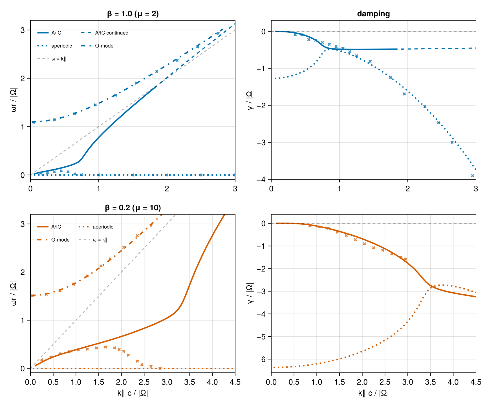
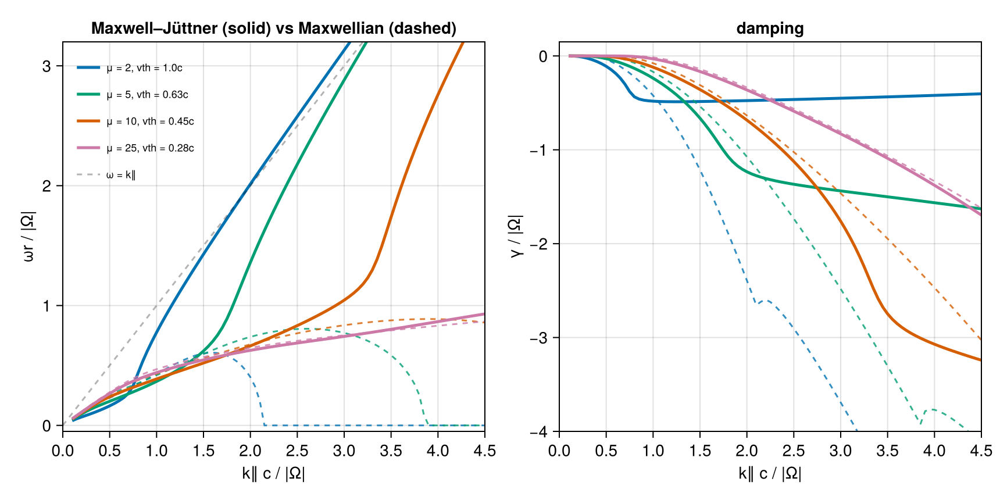

Relativistic pair plasma (López 2014 & Verscharen 2018)
A hot electron–positron pair plasma with isotropic Maxwell–Jüttner momentum distribution μ = mc²/T = 2Π²/β∥, at two temperatures: β = 1 (μ = 2) and β = 0.2 (μ = 10).
Reference: López (2014, PoP, 10.1063/1.4894679) and Verscharen (Fig. 5, 2018, JPP, 10.1017/S0022377818000739)
Verdict. Published damping and O-modes are reproduced. The A/IC ωr descent is a continuation artifact; the physical root turns toward the light line. Detailed diagnosis is linked below.
Modes on the page:
- quasi-parallel A/IC (low
ωr): weakly damped Alfvén-like at smallk∥, turning strongly cyclotron-damped, then running into the light line; - ordinary wave (O-mode, high
ωr): superluminal branch,γ ≈ 0; - nonpropagating (aperiodic) family (
ωr = 0) present at everyk∥with finite zero-kdamping — a purely relativistic feature.
using VlasovMaxwellDispersion
using DelimitedFiles
using CairoMakiePlasma setup
Normalized to |Ω| = 1; Π² = ωp²/Ω² = 1 per species; momenta in mc, k in Ω/c. MaxwellJuttner(μ) feeds the relativistic closed-form tensor. Equal masses and opposite charges make R/L degenerate, so the parallel branch is a single Alfvén-like mode and every transverse root of the full determinant is a double zero.
pair(vdf) = (NormalizedSpecies(1.0, 1.0, vdf), NormalizedSpecies(-1.0, 1.0, vdf))
plasma2 = pair(MaxwellJuttner(mu=2.0)) ## β = 1.0
plasma10 = pair(MaxwellJuttner(mu=10.0)) ## β = 0.2
kp = 0.001;Branch continuation
# μ=2 propagating (A/IC): from the ALPS k∥=0.1 seed down to 0.05 and up to the
# last subluminal point k∥=1.85 (crosses ωr = k∥c near 1.9).
kz2p = collect(0.05:0.05:1.85)
ω2p = solve(DispersionProblem(plasma2, Seed(3.9621e-2 - 2.644e-6im, Wavenumber(0.0, 0.1)), Wavenumber.(0.0, kz2p); mode=:L)).omega
# μ=2 purely imaginary (aperiodic) family, both ways from k∥=0.85.
kz2d = collect(0.05:0.05:3.0)
ω2d = solve(DispersionProblem(plasma2, Seed(1.0e-4 - 0.478im, Wavenumber(0.0, 0.85)), Wavenumber.(0.0, kz2d); mode=:L)).omega
# μ=10 propagating: from a robust k∥=0.3 seed
kz10 = collect(0.1:0.05:4.5)
ω10 = solve(DispersionProblem(plasma10, Seed(0.155 - 1.0e-4im, Wavenumber(0.0, 0.3)), Wavenumber.(0.0, kz10); mode=:L)).omega
# μ=10 aperiodic family. Anchoring near its minimum (k∥=3.9) lets adaptive
# continuation stay on the axis through the close pass with the propagating root.
kap10 = collect(0.05:0.05:4.5)
ωap10 = solve(DispersionProblem(plasma10, Seed(-2.73im, Wavenumber(0.0, 3.9)), Wavenumber.(0.0, kap10); mode=:L)).omega
# μ=2 A/IC light-line continuation (direct trace on the continued L-mode):
# stays slightly superluminal (ωr/k∥ → 1.04) with slowly recovering damping.
kz2c = collect(1.9:0.1:3.0)
ω2c = solve(DispersionProblem(plasma2, ω2p[end], Wavenumber.(0.0, kz2c); mode=:L)).omega;O-modes
Superluminal (ωr > k∥): the O-mode is near-marginal (γ ≈ 0), and the continued sheet below the axis is exponentially far from the physical boundary value near marginal superluminal ω (continuation note), so we locate it on the real axis as the |det 𝒟| → 0 minimum via the CoupledVDF path, continued in k∥. Momentum bounds follow the thermal spread (±15 mc at μ = 2, ±5 mc at μ = 10).
using VlasovMaxwellDispersion: DispersionFunction
plasmaC2 = pair(CoupledVDF(MaxwellJuttner(2.0); para=(-15.0, 15.0), perp=15.0, regime=Relativistic()))
plasmaC10 = pair(CoupledVDF(MaxwellJuttner(10.0); para=(-5.0, 5.0), perp=5.0, regime=Relativistic()))
function omode(plasmaC, kzs, wr0)
out = similar(kzs)
wr = wr0
for i in eachindex(kzs)
g = DispersionFunction(plasmaC, Wavenumber(kp, kzs[i]))
f = w -> abs(g(complex(w, 0.0)))
lo, hi = max(0.9wr, kzs[i] + 0.02), wr + 0.4 + 0.25kzs[i]
for _ in 1:60
m1, m2 = (2lo + hi) / 3, (lo + 2hi) / 3
f(m1) < f(m2) ? (hi = m2) : (lo = m1)
end
wr = (lo + hi) / 2
out[i] = wr
end
return out
end
kzo = collect(0.02:0.2:3.0)
kzo10 = collect(0.02:0.2:4.42)
ωo2 = omode(plasmaC2, kzo, 1.1)
ωo10 = omode(plasmaC10, kzo10, 1.5)
# Digitized Verscharen (2018) Fig. 5, plotted as ×-crosses.
ref = readdlm(joinpath(@__DIR__, "relativistic_pair_verscharen18.tsv"); comments=true)
fig5 = (; zip((:aic_wr2, :aic_gm2, :o_wr2, :aic_wr10, :aic_gm10, :o_wr10),
(ref[ref[:, 1] .== i, 2:3] for i in 1:6))...)(aic_wr2 = [0.15 0.04; 0.25 0.044; … ; 2.5 0.0; 3.0 0.0], aic_gm2 = [0.35 -0.09; 0.45 -0.09; … ; 2.65 -3.0; 2.95 -3.9], o_wr2 = [0.05 1.09; 0.35 1.14; … ; 2.45 2.65; 2.75 2.93], aic_wr10 = [0.25 0.177; 0.45 0.234; … ; 2.65 0.044; 2.85 0.0], aic_gm10 = [0.85 -0.099; 1.05 -0.16; … ; 2.85 -1.499; 2.95 -1.581], o_wr10 = [0.05 1.511; 0.35 1.537; … ; 2.35 2.758; 2.65 2.971])Root families
The transverse dispersion relation carries two families that never merge (closest approach near k∥ ≈ 0.85):
| family | μ = 2 | μ = 10 |
|---|---|---|
| propagating A/IC | ωr rises, γ saturates at γ ≈ -Ω/2, then chases the light line, crossing near k∥≈1.9 | ωr rises past the published ≈0.44 peak |
| aperiodic | ωr=0 at every k∥; γ→−1.271=−4/π as k∥→0 | at every k∥, far deeper: γ→−6.366=−20/π at k∥→0 |
blu, red = Makie.wong_colors()[1], Makie.wong_colors()[6]
fig = Figure(size=(860, 720))
axr2m = Axis(fig[1, 1]; ylabel="ωr / |Ω|", title="β = 1.0 (μ = 2)", limits=(0, 3, -0.09, 3.2))
axi2m = Axis(fig[1, 2]; ylabel="γ / |Ω|", title="damping", limits=(0, 3, -4, 0.3))
axr10 = Axis(fig[2, 1]; xlabel="k∥ c / |Ω|", ylabel="ωr / |Ω|", title="β = 0.2 (μ = 10)", limits=(0, 4.5, -0.09, 3.2))
axi10 = Axis(fig[2, 2]; xlabel="k∥ c / |Ω|", ylabel="γ / |Ω|", limits=(0, 4.5, -6.6, 0.4))
function plotrow!((axr, axi), branches, (ko, ωo), refs, color, xmax)
for (k, ω, linestyle, label, linewidth) in branches
lines!(axr, k, real.(ω); color, linewidth, linestyle, label)
lines!(axi, k, imag.(ω); color, linewidth, linestyle)
end
lines!(axr, ko, ωo; color, linewidth=2.5, linestyle=:dashdot, label="O-mode")
for (m, ax) in zip(refs, (axr, axr, axi))
scatter!(ax, m[:, 1], m[:, 2]; color=(color, 0.75), marker=:xcross, markersize=8)
end
lines!(axr, 0:xmax, 0:xmax; color=(:black, 0.3), linestyle=:dash, label="ω = k∥")
hlines!(axi, [0.0]; color=(:black, 0.3), linestyle=:dash)
axislegend(axr; position=:lt, framevisible=false, labelsize=9, nbanks=2)
end
plotrow!((axr2m, axi2m), ((kz2p, ω2p, :solid, "A/IC", 2.5), (kz2c, ω2c, :dash, "A/IC continued", 2.0),
(kz2d, ω2d, :dot, "aperiodic", 2.5)), (kzo, ωo2), (fig5.aic_wr2, fig5.o_wr2, fig5.aic_gm2), blu, 3)
plotrow!((axr10, axi10), ((kz10, ω10, :solid, "A/IC", 2.5), (kap10, ωap10, :dot, "aperiodic", 2.5)),
(kzo10, ωo10), (fig5.aic_wr10, fig5.o_wr10, fig5.aic_gm10), red, 4)
fig
A/IC propagating (solid or dashed if past the light line), O-mode (dash-dot), aperiodic (dotted). Crosses are results from ALPS.
Why the A/IC branch saturates
Relativistic particles have compact velocity support, |v∥| < c. The Doppler shift is therefore bounded by k∥c, unlike a Maxwellian's unbounded resonant velocities. For a real superluminal boundary frequency, cyclotron resonance is possible only inside the band
\[\omega_r^2-k_\parallel^2c^2 \lesssim \Omega^2.\]
While for "nonrelativistic" particles, cyclotron damping grows without limit and overdamps the mode.
This constraint explains the large-k∥ topology:
- bounded Doppler shifts and resonance broadening let the A/IC damping saturate near
|γ| ≈ Ω/2instead of growing until the wave overdamps; - the branch approaches and crosses the light line near
k∥ ≈ 1.9, while resonant particles move to the exponentially sparse Jüttner tail; - damping then recovers slowly as the resonant Lorentz factors increase; the real-frequency band edge organizes the limiting resonance geometry but does not impose a sharp cutoff on a damped root.
Relativistic mass spread also changes the zero-k limit: Ω → Ω/γ_L smears the cyclotron line over (0, Ω], giving the separate aperiodic family finite damping even without Doppler broadening. Nonrelativistically, the resonance is sharp and zero-$k$ collisionless damping of this mode is impossible.
The published A/IC descent is instead produced by a non-holomorphic continuation. See the investigation report for its diagnosis and corrected López formula.
Degeneration to the Maxwellian limit
Cooling μ = 2 → 25 (vth/c = √(2/μ) = 1 → 0.28) makes the Maxwell–Jüttner A/IC branch approach its Maxwellian counterpart pointwise. The topology remains different: every Maxwellian branch eventually descends and merges onto the imaginary axis, while every finite-temperature Maxwell–Jüttner branch eventually turns toward the light line.
kzt = collect(0.1:0.05:4.5)
ks = Wavenumber.(0.0, kzt)
mus = (2.0, 5.0, 10.0, 25.0)
ωmj = [solve(DispersionProblem(pair(MaxwellJuttner(mu=μ)), 0.04 - 1.0e-4im, ks; mode=:L)).omega for μ in mus]
ωmx = [solve(DispersionProblem(pair(Maxwellian(sqrt(2 / μ))), 0.04 - 1.0e-4im, ks; mode=:L)).omega for μ in mus];At μ = 25 the curves agree through k∥ ≈ 3.5; cooling postpones the relativistic turn to larger k∥, but never removes it.
cols = Makie.wong_colors()[[1, 3, 6, 4]]
figtrend = Figure(size=(860, 430))
axtr = Axis(
figtrend[1, 1]; xlabel="k∥ c / |Ω|", ylabel="ωr / |Ω|",
title="Maxwell–Jüttner (solid) vs Maxwellian (dashed)", limits=(0, 4.5, -0.05, 3.2)
)
axti = Axis(figtrend[1, 2]; xlabel="k∥ c / |Ω|", ylabel="γ / |Ω|", title="damping", limits=(0, 4.5, -4, 0.15))
for (μ, ωj, ωx, color) in zip(mus, ωmj, ωmx, cols)
label = "μ = $(Int(μ)), vth = $(round(sqrt(2 / μ), digits=2))c"
lines!(axtr, kzt, real.(ωj); color, linewidth=2.5, label)
lines!(axti, kzt, imag.(ωj); color, linewidth=2.5)
lines!(axtr, kzt, real.(ωx); color=(color, 0.8), linewidth=1.5, linestyle=:dash)
lines!(axti, kzt, imag.(ωx); color=(color, 0.8), linewidth=1.5, linestyle=:dash)
end
lines!(axtr, 0:4, 0:4; color=(:black, 0.3), linestyle=:dash, label="ω = k∥")
axislegend(axtr; position=:lt, framevisible=false, labelsize=9)
figtrend
This page was generated using Literate.jl.